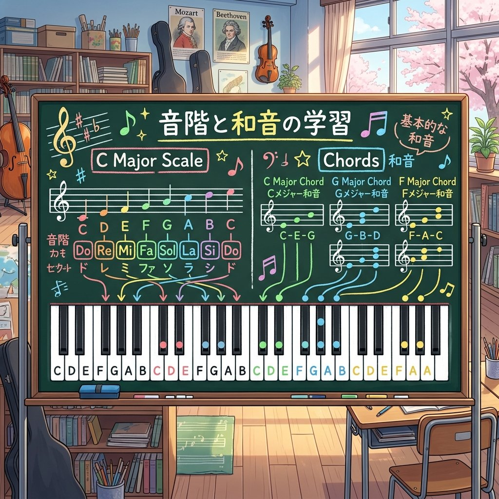

中学音楽（楽典）
音楽の知識② (和音・コードネーム・調と音階)
調（キー）の仕組み、シャープやフラットなどの臨時記号のルール、和音（三和音・コードネーム）、そして長調・短調の関係や伝統的な日本音階について解説します。テストで高配点となる有効範囲の記述問題や、コードネームの読み方を整理して暗記しましょう！
1. 音階と主音・階名
① 音階（スケール）を形作る言葉
- 主音（しゅおん） ➔ 音階の始まりの音であり、中心になる音。
- 階名（かいめい） ➔ 音階の各音に付けられた名前（ド、レ、ミ、ファ、ソ、ラ、シ）。※キーが変わっても中心音は常に「ド」として歌います。
② 長調と短調の主音（超頻出！）
- 長調（ちょうちょう）の音階では、主音を「ド」とします。（明るい響きの調）
- 短調（たんちょう）の音階では、主音を「ラ」とします。（哀愁を帯びた、暗い響きの調）
2. 臨時記号と調号の有効範囲（記述問題対策！）
音の高さを半音単位で変化させるための記号の分類と、それぞれの効果が及ぶ「範囲」の違いです。
① 記号の種類と意味
- 臨時記号（りんじきごう） ➔ 一時的に音の高さを変化させるために、音符の左側に直接付ける記号の総称（♯、♭、♮など）。
- 『♯』（シャープ） ➔ 音を半音上げる記号。
- 『♭』（フラット） ➔ 音を半音下げる記号。
- 『♮』（ナチュラル） ➔ 変化していた音を元の高さに戻す記号。
② 有効範囲の違い（テスト記述頻出！）
- 調号（五線の最初に置かれる♯や♭）の有効範囲
➔ 「転調するか、曲が終わるまで」、同じ音名の音すべてに有効です。 - 臨時記号（音符の直前に書かれる♯、♭、♮）の有効範囲
➔ 「その小節内でのみ」、同じ高さの音に対して有効です。
③ ヘ長調とト長調の変化音
- ヘ長調（♭が1つ） ➔ ロ音（シ）の音が常に半音下がります。
- ト長調（♯が1つ） ➔ ヘ音（ファ）の音が常に半音上がます。
3. 音程と和音・コードネーム

音を重ねてできる和音（コード）の構造図。
- 音程（おんてい） ➔ 音と音との高さの隔たり（距離）。単位は「度」で表します（同じ高さは1度、ドとレは2度）。
- 三和音（さんわおん） ➔ ある音（根音）を基準にして、その上に3度と5度上の音を重ねた3音からなる和音。
- 主要三和音（しゅようさんわおん） ➔ 音階のⅠ（1番目）、Ⅳ（4番目）、Ⅴ（5番目）の音の上にできる、曲の骨組みとなる重要なはたらきを持つ3つの三和音。
- 属七の和音（ぞくしちのわおん） ➔ Ⅴの和音（属和音）に、さらに元になる音から7度上の音を加えた4音の和音（例：G7など）。
① コードネームの読み方
和音の構成を英語音名と記号で表したものを「コードネーム」と呼びます。
- 大文字だけの表記（例：「C」や「G」） ➔ メイジャー（長三和音：明るい響き）と読みます。
- 小文字の「m」が付く表記（例：「Cm」や「Am」） ➔ マイナー（短三和音：寂しい響き）と読みます。
- 数字の「7」が付く表記（例：「C7」や「G7」） ➔ セブンス（七の和音）と読みます。
4. 調の関係と日本の伝統音階
① 調の相互関係
- 平行調（へいこうちょう） ➔ 調号（♯や♭の数）が全く同じ長調と短調の組み合わせ（例：ハ長調とイ短調）。
- 同主調（どうしゅちょう） ➔ 同じ高さの主音を持つ長調と短調の組み合わせ（例：ハ長調とハ短調）。
② 日本の音階（沖縄・琉球音階）

沖縄の民謡「谷茶前」などに使われる、独特の音階。
- 沖縄（琉球）音階 ➔ 日本の代表的な5音音階の1つで、ドレミファソラシのうち「レ」と「ラ」が抜けた音階（ド・ミ・ファ・ソ・シ）。明るくトロピカルな響きを持ちます。
🔥 定期テスト対策・暗記のコツ
① 臨時記号の有効範囲（超重要！）
「その小節内でのみ」有効であるという記述問題は、定期テストの定番中の定番です。なお、小節線を越えると無効になりますが、タイで結ばれている間だけは次の小節でも有効になります。セットで覚えておきましょう。
② ヘ長調とト長調の変化音の覚え方
「へ（ファ）長調はシ（ロ音）に♭」「ト（ソ）長調はファ（ヘ音）に♯」が付きます。英語やドイツ語音名での出題も多いため、「F major ➔ B♭」「G major ➔ F♯」と対応させて覚えましょう。
③ 平行調と同主調の違い
「平行調 ➔ 調号が同じ（例：ハ長調とイ短調［どちらも調号なし］）」
「同主調 ➔ 主音のド（ハ）が同じ（例：ハ長調とハ短調）」
言葉が非常に似ているため、文字を入れ替える問題や識別問題で混同しないよう区別して暗記してください！